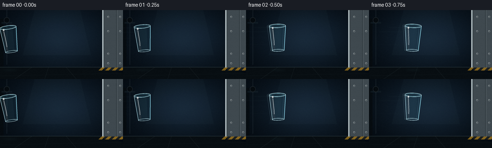
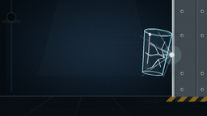

CODING AGENTS AS PIXEL WORLD MODELS
traex/GPT-5.6-Sol · phygen_134
点击播放 · 原生 RGB 像素
逐轮保存的候选
回放视频、检查图与代码变化。
每份候选均可单独播放。实际图片检查记录在下方工具轨迹中。
候选 01播放与检查图
点击播放 · 原生 RGB 像素

展开代码变化
--- 上一保存版本
+++ 本次保存版本
@@ -0,0 +1,246 @@
+from pathlib import Path
+import math, json
+import numpy as np
+from PIL import Image, ImageDraw, ImageFilter
+import artifact_io
+
+# Procedural, deterministic text-to-video rendering: a glass tumbler impacts a steel wall.
+ROOT = Path(__file__).resolve().parent
+spec = json.loads((ROOT / 'task_spec.json').read_text())
+W, H, N = spec['width'], spec['height'], spec['frames']
+S = 4
+SW, SH = W*S, H*S
+rng = np.random.default_rng(134)
+
+def P(p): return tuple(int(round(v*S)) for v in p)
+def pts(ps): return [P(p) for p in ps]
+def mix(a,b,t): return tuple(int(a[i]*(1-t)+b[i]*t) for i in range(len(a)))
+
+def make_background():
+ yy, xx = np.mgrid[0:SH,0:SW]
+ # Cold, cinematic industrial workshop; a soft pool of light isolates the trajectory.
+ vign = np.sqrt(((xx/S-124)/160)**2 + ((yy/S-66)/105)**2)
+ light = np.exp(-(((xx/S-125)/100)**2 + ((yy/S-58)/63)**2))
+ base = np.zeros((SH,SW,3), dtype=np.float32)
+ base[:,:,0] = 10 + 12*light - 6*vign
+ base[:,:,1] = 18 + 21*light - 8*vign
+ base[:,:,2] = 25 + 30*light - 9*vign
+ # very subtle fixed texture, so it reads as a real environment rather than flat color
+ tex = rng.normal(0, 1.5, (SH,SW))
+ base += tex[:,:,None]
+ im = Image.fromarray(np.uint8(np.clip(base,0,255)), 'RGB')
+ d = ImageDraw.Draw(im, 'RGBA')
+ # soft overhead light and distant out-of-focus structural shapes
+ d.polygon(pts([(72,0),(167,0),(189,94),(47,94)]), fill=(77,105,124,12))
+ d.rectangle(P((0,18,7,119)), fill=(6,11,15,210))
+ d.rectangle(P((3,25,25,28)), fill=(22,35,43,130))
+ d.line(pts([(14,0),(14,114)]), fill=(66,83,91,45), width=2*S)
+ d.ellipse(P((8,15,20,27)), fill=(5,10,14,230), outline=(69,83,88,90), width=S)
+ # floor and its perspective seams
+ d.polygon(pts([(0,119),(214,119),(256,133),(256,144),(0,144)]), fill=(8,14,18,255))
+ d.line(pts([(0,119),(256,119)]), fill=(81,102,111,100), width=S)
+ for x in [30,93,159]:
+ d.line(pts([(x,144),(111+(x-111)*.55,119)]), fill=(53,68,74,45), width=S)
+ d.line(pts([(0,137),(256,132)]), fill=(52,66,70,26), width=S)
+ # the immovable, thick metallic target wall and beveled impact face
+ d.rectangle(P((213,0,256,120)), fill=(63,73,79,255))
+ # brushed-steel bands
+ for y in range(0,120,3):
+ c = 82 + int(8*math.sin(y*.47))
+ d.line(pts([(216,y),(256,y)]), fill=(c,c+8,c+11,25), width=max(1,S//2))
+ d.rectangle(P((213,0,216,120)), fill=(151,165,170,255))
+ d.line(pts([(213,0),(213,120)]), fill=(231,239,239,195), width=S)
+ d.line(pts([(216,0),(216,120)]), fill=(26,32,35,190), width=S)
+ d.line(pts([(242,0),(242,120)]), fill=(30,38,42,125), width=S)
+ d.line(pts([(244,0),(244,120)]), fill=(135,145,147,55), width=S)
+ # bolts make the surface unmistakably metallic and solid
+ for bx in (225,250):
+ for by in (14,44,91,111):
+ d.ellipse(P((bx-2.1,by-2.1,bx+2.1,by+2.1)), fill=(32,38,41,230), outline=(164,176,179,180), width=S)
+ d.ellipse(P((bx-1.0,by-1.2,bx+.2,by)), fill=(218,225,225,160))
+ # hazard stripe near the foot, behind the action
+ d.rectangle(P((217,120,256,126)), fill=(26,30,31,255))
+ for x in range(211,267,14):
+ d.polygon(pts([(x,120),(x+7,120),(x+1,126),(x-6,126)]), fill=(185,135,30,170))
+ return im
+
+BACKGROUND = make_background()
+
+def transform(local, cx, cy, ang):
+ a=math.radians(ang); ca,sa=math.cos(a),math.sin(a)
+ return [(cx+x*ca-y*sa, cy+x*sa+y*ca) for x,y in local]
+
+def draw_polyline(draw, ps, fill, width=1):
+ draw.line(pts(ps), fill=fill, width=max(1,int(width*S)), joint='curve')
+
+def ellipse_points(cx,cy,rx,ry,n=32):
+ return [(cx+rx*math.cos(2*math.pi*i/n), cy+ry*math.sin(2*math.pi*i/n)) for i in range(n)]
+
+def draw_glass(base, cx, cy, ang, impact=False, alpha_scale=1.0):
+ """Layered transparent tumbler with refractive body, rim, base and highlights."""
+ layer=Image.new('RGBA',(SW,SH),(0,0,0,0)); d=ImageDraw.Draw(layer,'RGBA')
+ body=[(-17,-25),(17,-25),(12.3,27),(-12.3,27)]
+ bp=transform(body,cx,cy,ang)
+ d.polygon(pts(bp), fill=(92,186,213,int(25*alpha_scale)))
+ # internal cool/warm refraction bands
+ band=transform([(-13,-21),(-8,-21),(-6,23),(-10,25)],cx,cy,ang)
+ d.polygon(pts(band), fill=(208,245,255,int(28*alpha_scale)))
+ band2=transform([(9,-21),(14,-22),(10,24),(7,23)],cx,cy,ang)
+ d.polygon(pts(band2), fill=(42,116,146,int(25*alpha_scale)))
+ # silhouette edges, deliberately bright enough to read at 256x144
+ left=transform([(-17,-24),(-12.3,27)],cx,cy,ang)
+ right=transform([(17,-24),(12.3,27)],cx,cy,ang)
+ draw_polyline(d,left,(191,237,248,int(205*alpha_scale)),1.2)
+ draw_polyline(d,right,(146,219,238,int(225*alpha_scale)),1.25)
+ # doubled thick lip and the visible back half
+ rim=transform(ellipse_points(0,-25,17,4.0,42),cx,cy,ang)
+ d.polygon(pts(rim), fill=(56,105,120,int(48*alpha_scale)))
+ draw_polyline(d,rim+[rim[0]],(203,245,252,int(220*alpha_scale)),1.05)
+ inner=transform(ellipse_points(0,-25,14.3,2.7,36),cx,cy,ang)
+ draw_polyline(d,inner+[inner[0]],(68,139,159,int(180*alpha_scale)),0.75)
+ # substantial glass base
+ basearc=transform(ellipse_points(0,26,12.3,2.25,32),cx,cy,ang)
+ draw_polyline(d,basearc+[basearc[0]],(198,238,246,int(190*alpha_scale)),1.15)
+ # long specular highlight
+ hi=transform([(-10,-18),(-9,-6),(-8,7),(-8,15)],cx,cy,ang)
+ draw_polyline(d,hi,(244,255,255,int(185*alpha_scale)),1.0)
+ p=transform([(-9.7,-21)],cx,cy,ang)[0]
+ d.ellipse(P((p[0]-1.5,p[1]-2,p[0]+1.5,p[1]+2)),fill=(255,255,255,int(210*alpha_scale)))
+ if impact:
+ # A visible crack network propagates instantaneously from the contact side.
+ cracks=[[(12,5),(4,1),(-2,-8),(-8,-11)],[(12,5),(5,8),(-1,18),(-7,22)],[(12,5),(7,-5),(10,-15)],[(5,8),(9,17)],[(4,1),(-5,5),(-12,2)]]
+ for line in cracks:
+ q=transform(line,cx,cy,ang)
+ draw_polyline(d,q,(245,255,255,240),0.85)
+ base.alpha_composite(layer)
+
+def draw_speed_trails(im, f, cx, cy):
+ if f<=0 or f>=8: return
+ layer=Image.new('RGBA',(SW,SH),(0,0,0,0)); d=ImageDraw.Draw(layer,'RGBA')
+ strength=int(42+5*f)
+ # air/motion trails taper behind the fast cup
+ for j,(dy,length) in enumerate([(-22,32),(-13,52),(0,40),(14,58),(25,31)]):
+ start=cx-18-length; end=cx-18
+ d.line(pts([(start,cy+dy),(end,cy+dy)]),fill=(139,211,230,max(10,strength-j*5)),width=max(S//2,S-j//2))
+ layer=layer.filter(ImageFilter.GaussianBlur(1.1*S))
+ im.alpha_composite(layer)
+
+# deterministic fracture pieces: origin offsets, velocity, size, spin, tint
+pieces=[]
+for i in range(38):
+ ox=rng.uniform(-13,12); oy=rng.uniform(-24,25)
+ # collision sends almost every fragment back from the rigid wall, with a fan of velocities
+ vx=rng.uniform(-13.5,-2.3) * (0.65+0.45*abs(oy)/25)
+ vy=rng.uniform(-8.5,5.0) + oy*.055
+ size=rng.uniform(1.5,6.0) * (1.3 if i<10 else 1.0)
+ spin=rng.uniform(-65,65); phase=rng.uniform(0,360)
+ pieces.append((ox,oy,vx,vy,size,spin,phase))
+
+def shard_position(piece,tau):
+ ox,oy,vx,vy,size,spin,phase=piece
+ x=196+ox+vx*tau
+ y=66+oy+vy*tau+1.55*tau*tau
+ # floor collision at y ~118: reflect and quickly lose energy
+ if y+size>118:
+ over=y+size-118
+ y=118-size-over*.32
+ # spread/sliding left after bounce
+ x += vx*.15*max(0,tau-3)
+ return x,y
+
+def draw_shards(im,f):
+ tau=f-7
+ if tau<=0:return
+ # motion blur underneath shards
+ blur=Image.new('RGBA',(SW,SH),(0,0,0,0)); bd=ImageDraw.Draw(blur,'RGBA')
+ layer=Image.new('RGBA',(SW,SH),(0,0,0,0)); d=ImageDraw.Draw(layer,'RGBA')
+ for i,piece in enumerate(pieces):
+ x,y=shard_position(piece,tau)
+ px,py=shard_position(piece,max(0,tau-.48))
+ if x < -10 or y > H+10: continue
+ ox,oy,vx,vy,size,spin,phase=piece
+ # fleeting streak establishes explosive outward momentum
+ if tau<4.5:
+ bd.line(pts([(px,py),(x,y)]),fill=(157,227,244,int(max(15,75-11*tau))),width=max(1,int(.65*S)))
+ ang=math.radians(phase+spin*tau)
+ ca,sa=math.cos(ang),math.sin(ang)
+ raw=[(-.75*size,-.35*size),(.8*size,0),(-.28*size,.72*size)]
+ if i%4==0: raw.append((-.75*size,.1*size))
+ poly=[(x+u*ca-v*sa,y+u*sa+v*ca) for u,v in raw]
+ a=max(80,int(215-4*tau))
+ fill=(92,190,216,max(25,int(a*.28)))
+ d.polygon(pts(poly),fill=fill)
+ d.line(pts(poly+[poly[0]]),fill=(210,247,253,a),width=max(1,int(.65*S)),joint='curve')
+ # pinpoint glint on some rotating facets
+ if i%6==0 and (i+f)%3==0:
+ d.ellipse(P((x-1,y-1,x+1,y+1)),fill=(255,255,255,220))
+ blur=blur.filter(ImageFilter.GaussianBlur(.75*S))
+ im.alpha_composite(blur); im.alpha_composite(layer)
+ # recognizable broken rim and base arcs travel with the field
+ if tau<7:
+ arc=Image.new('RGBA',(SW,SH),(0,0,0,0)); ad=ImageDraw.Draw(arc,'RGBA')
+ for k,(idx,span) in enumerate([(2,190),(7,145)]):
+ x,y=shard_position(pieces[idx],tau)
+ r=(7 if k==0 else 5.5)*S
+ box=(int(x*S-r),int(y*S-r*.35),int(x*S+r),int(y*S+r*.35))
+ ad.arc(box,start=int(phase if (phase:=tau*38+k*80) else 0),end=int(phase+span),fill=(218,249,255,210),width=3)
+ im.alpha_composite(arc)
+
+def add_impact(im,f):
+ if f not in (7,8,9): return
+ layer=Image.new('RGBA',(SW,SH),(0,0,0,0));d=ImageDraw.Draw(layer,'RGBA')
+ strength={7:1.0,8:.72,9:.25}[f]; cx,cy=212.5,68
+ # contact flash and a radial fan of glass dust; no dent in the rigid steel.
+ r=12+7*(f-7)
+ d.ellipse(P((cx-r,cy-r,cx+r,cy+r)),fill=(185,239,250,int(38*strength)))
+ rays=[(-29,-14),(-31,0),(-27,18),(-17,-29),(-11,28),(-40,-24),(-38,27)]
+ for j,(dx,dy) in enumerate(rays):
+ mul=1+.22*(f-7)
+ d.line(pts([(cx,cy),(cx+dx*mul,cy+dy*mul)]),fill=(225,251,255,int((180-j*10)*strength)),width=max(1,int((1.4-j*.08)*S)))
+ d.ellipse(P((cx-3,cy-3,cx+3,cy+3)),fill=(255,255,255,int(245*strength)))
+ layer=layer.filter(ImageFilter.GaussianBlur(.45*S))
+ im.alpha_composite(layer)
+
+def add_floor_reflections(im,f,cupx=None):
+ layer=Image.new('RGBA',(SW,SH),(0,0,0,0));d=ImageDraw.Draw(layer,'RGBA')
+ if cupx is not None:
+ d.ellipse(P((cupx-18,123,cupx+18,127)),fill=(100,196,218,26))
+ if f>=8:
+ # scattered reflections under fallen shards
+ d.ellipse(P((63,124,200,131)),fill=(95,175,191,12))
+ layer=layer.filter(ImageFilter.GaussianBlur(3*S)); im.alpha_composite(layer)
+
+def render_frame(f):
+ im=BACKGROUND.convert('RGBA')
+ cup_positions=[20,42,66,91,118,148,177,192]
+ cup_y=[61,59,58,58,59,61,63,65]
+ cup_ang=[-8,-5,-2,2,5,8,10,8]
+ if f<=7:
+ cx,cy=cup_positions[f],cup_y[f]
+ add_floor_reflections(im,f,cx)
+ draw_speed_trails(im,f,cx,cy)
+ # ghosted trailing edge at peak speed adds natural exposure blur
+ if 2<=f<=6:
+ draw_glass(im,cx-4.0,cy-.3,cup_ang[f]-1,False,.18)
+ draw_glass(im,cx,cy,cup_ang[f],impact=(f==7))
+ else:
+ add_floor_reflections(im,f,None)
+ draw_shards(im,f)
+ add_impact(im,f)
+ # Brief reflected light on the steel face at impact.
+ if 7<=f<=9:
+ glow=Image.new('RGBA',(SW,SH),(0,0,0,0)); gd=ImageDraw.Draw(glow,'RGBA')
+ a={7:90,8:55,9:18}[f]
+ gd.rectangle(P((213,42,217,92)),fill=(205,242,248,a))
+ glow=glow.filter(ImageFilter.GaussianBlur(3*S));im.alpha_composite(glow)
+ # downsample for clean antialiasing, then a restrained film grain
+ out=im.convert('RGB').resize((W,H),Image.Resampling.LANCZOS)
+ arr=np.array(out).astype(np.int16)
+ frng=np.random.default_rng(9000+f)
+ grain=frng.normal(0,0.7,(H,W,1))
+ arr=np.clip(arr+grain,0,255).astype(np.uint8)
+ return arr
+
+frames=np.stack([render_frame(i) for i in range(N)])
+artifact_io.save(frames,ROOT)
+print(f"saved {frames.shape} RGB frames to {ROOT}")
候选 02播放与检查图
点击播放 · 原生 RGB 像素


展开代码变化
--- 上一保存版本
+++ 本次保存版本
@@ -138,14 +138,27 @@
def shard_position(piece,tau):
ox,oy,vx,vy,size,spin,phase=piece
- x=196+ox+vx*tau
- y=66+oy+vy*tau+1.55*tau*tau
- # floor collision at y ~118: reflect and quickly lose energy
- if y+size>118:
- over=y+size-118
- y=118-size-over*.32
- # spread/sliding left after bounce
- x += vx*.15*max(0,tau-3)
+ x0, y0 = 196+ox, 66+oy
+ floor = 118-size
+ gravity = 3.1
+ # Exact first floor-hit time for the ballistic arc.
+ disc = max(0.0, vy*vy + 2*gravity*(floor-y0))
+ hit = (-vy + math.sqrt(disc))/gravity
+ if tau <= hit:
+ x=x0+vx*tau
+ y=y0+vy*tau+.5*gravity*tau*tau
+ else:
+ xhit=x0+vx*hit
+ dt=tau-hit
+ impact_speed=vy+gravity*hit
+ rebound_speed=.27*impact_speed
+ flight=2*rebound_speed/gravity
+ # A single small, damped bounce, then frictional sliding to rest.
+ if dt < flight:
+ y=floor-rebound_speed*dt+.5*gravity*dt*dt
+ else:
+ y=floor
+ x=xhit + vx*.58*(1-math.exp(-dt/1.35))
return x,y
def draw_shards(im,f):
候选 03播放与检查图
候选 04播放与检查图
可观测工具轨迹
实际执行的命令与返回图片。
命令 1exit 0
/bin/bash -lc "cat prompt.txt && printf '\\n--- RULES ---\\n' && cat GENERATION_RULES.md && printf '\\n--- SPEC ---\\n' && cat task_spec.json"
命令 2exit 0
/bin/bash -lc "find . -maxdepth 2 -type f -printf '%p %s bytes\\n' | sort && printf '\\nTOOLS\\n' && command -v ffmpeg && command -v blender || true && command -v python3"
命令 3exit 0
/bin/bash -lc 'cat artifact_io.py'
命令 4exit 0
/bin/bash -lc "cat > generate.py <<'PY'
from pathlib import Path
import math, json
import numpy as np
from PIL import Image, ImageDraw, ImageFilter
import artifact_io
# Procedural, deterministic text-to-video rendering: a glass tumbler impacts a steel wall.
ROOT = Path(__file__).resolve().parent
spec = json.loads((ROOT / 'task_spec.json').read_text())
W, H, N = spec['width'], spec['height'], spec['frames']
S = 4
SW, SH = W*S, H*S
rng = np.random.default_rng(134)
def P(p): return tuple(int(round(v*S)) for v in p)
def pts(ps): return [P(p) for p in ps]
def mix(a,b,t): return tuple(int(a[i]*(1-t)+b[i]*t) for i in range(len(a)))
def make_background():
yy, xx = np.mgrid[0:SH,0:SW]
# Cold, cinematic industrial workshop; a soft pool of light isolates the trajectory.
vign = np.sqrt(((xx/S-124)/160)**2 + ((yy/S-66)/105)**2)
light = np.exp(-(((xx/S-125)/100)**2 + ((yy/S-58)/63)**2))
base = np.zeros((SH,SW,3), dtype=np.float32)
base[:,:,0] = 10 + 12*light - 6*vign
base[:,:,1] = 18 + 21*light - 8*vign
base[:,:,2] = 25 + 30*light - 9*vign
# very subtle fixed texture, so it reads as a real environment rather than flat color
tex = rng.normal(0, 1.5, (SH,SW))
base += tex[:,:,None]
im = Image.fromarray(np.uint8(np.clip(base,0,255)), 'RGB')
d = ImageDraw.Draw(im, 'RGBA')
# soft overhead light and distant out-of-focus structural shapes
d.polygon(pts([(72,0),(167,0),(189,94),(47,94)]), fill=(77,105,124,12))
d.rectangle(P((0,18,7,119)), fill=(6,11,15,210))
d.rectangle(P((3,25,25,28)), fill=(22,35,43,130))
d.line(pts([(14,0),(14,114)]), fill=(66,83,91,45), width=2*S)
d.ellipse(P((8,15,20,27)), fill=(5,10,14,230), outline=(69,83,88,90), width=S)
# floor and its perspective seams
d.polygon(pts([(0,119),(214,119),(256,133),(256,144),(0,144)]), fill=(8,14,18,255))
d.line(pts([(0,119),(256,119)]), fill=(81,102,111,100), width=S)
for x in [30,93,159]:
d.line(pts([(x,144),(111+(x-111)*.55,119)]), fill=(53,68,74,45), width=S)
d.line(pts([(0,137),(256,132)]), fill=(52,66,70,26), width=S)
# the immovable, thick metallic target wall and beveled impact face
d.rectangle(P((213,0,256,120)), fill=(63,73,79,255))
# brushed-steel bands
for y in range(0,120,3):
c = 82 + int(8*math.sin(y*.47))
d.line(pts([(216,y),(256,y)]), fill=(c,c+8,c+11,25), width=max(1,S//2))
d.rectangle(P((213,0,216,120)), fill=(151,165,170,255))
d.line(pts([(213,0),(213,120)]), fill=(231,239,239,195), width=S)
d.line(pts([(216,0),(216,120)]), fill=(26,32,35,190), width=S)
d.line(pts([(242,0),(242,120)]), fill=(30,38,42,125), width=S)
d.line(pts([(244,0),(244,120)]), fill=(135,145,147,55), width=S)
# bolts make the surface unmistakably metallic and solid
for bx in (225,250):
for by in (14,44,91,111):
d.ellipse(P((bx-2.1,by-2.1,bx+2.1,by+2.1)), fill=(32,38,41,230), outline=(164,176,179,180), width=S)
d.ellipse(P((bx-1.0,by-1.2,bx+.2,by)), fill=(218,225,225,160))
# hazard stripe near the foot, behind the action
d.rectangle(P((217,120,256,126)), fill=(26,30,31,255))
for x in range(211,267,14):
d.polygon(pts([(x,120),(x+7,120),(x+1,126),(x-6,126)]), fill=(185,135,30,170))
return im
BACKGROUND = make_background()
def transform(local, cx, cy, ang):
a=math.radians(ang); ca,sa=math.cos(a),math.sin(a)
return [(cx+x*ca-y*sa, cy+x*sa+y*ca) for x,y in local]
def draw_polyline(draw, ps, fill, width=1):
draw.line(pts(ps), fill=fill, width=max(1,int(width*S)), joint='curve')
def ellipse_points(cx,cy,rx,ry,n=32):
return [(cx+rx*math.cos(2*math.pi*i/n), cy+ry*math.sin(2*math.pi*i/n)) for i in range(n)]
def draw_glass(base, cx, cy, ang, impact=False, alpha_scale=1.0):
\"\"\"Layered transparent tumbler with refractive body, rim, base and highlights.\"\"\"
layer=Image.new('RGBA',(SW,SH),(0,0,0,0)); d=ImageDraw.Draw(layer,'RGBA')
body=[(-17,-25),(17,-25),(12.3,27),(-12.3,27)]
bp=transform(body,cx,cy,ang)
d.polygon(pts(bp), fill=(92,186,213,int(25*alpha_scale)))
# internal cool/warm refraction bands
band=transform([(-13,-21),(-8,-21),(-6,23),(-10,25)],cx,cy,ang)
d.polygon(pts(band), fill=(208,245,255,int(28*alpha_scale)))
band2=transform([(9,-21),(14,-22),(10,24),(7,23)],cx,cy,ang)
d.polygon(pts(band2), fill=(42,116,146,int(25*alpha_scale)))
# silhouette edges, deliberately bright enough to read at 256x144
left=transform([(-17,-24),(-12.3,27)],cx,cy,ang)
right=transform([(17,-24),(12.3,27)],cx,cy,ang)
draw_polyline(d,left,(191,237,248,int(205*alpha_scale)),1.2)
draw_polyline(d,right,(146,219,238,int(225*alpha_scale)),1.25)
# doubled thick lip and the visible back half
rim=transform(ellipse_points(0,-25,17,4.0,42),cx,cy,ang)
d.polygon(pts(rim), fill=(56,105,120,int(48*alpha_scale)))
draw_polyline(d,rim+[rim[0]],(203,245,252,int(220*alpha_scale)),1.05)
inner=transform(ellipse_points(0,-25,14.3,2.7,36),cx,cy,ang)
draw_polyline(d,inner+[inner[0]],(68,139,159,int(180*alpha_scale)),0.75)
# substantial glass base
basearc=transform(ellipse_points(0,26,12.3,2.25,32),cx,cy,ang)
draw_polyline(d,basearc+[basearc[0]],(198,238,246,int(190*alpha_scale)),1.15)
# long specular highlight
hi=transform([(-10,-18),(-9,-6),(-8,7),(-8,15)],cx,cy,ang)
draw_polyline(d,hi,(244,255,255,int(185*alpha_scale)),1.0)
p=transform([(-9.7,-21)],cx,cy,ang)[0]
d.ellipse(P((p[0]-1.5,p[1]-2,p[0]+1.5,p[1]+2)),fill=(255,255,255,int(210*alpha_scale)))
if impact:
# A visible crack network propagates instantaneously from the contact side.
cracks=[[(12,5),(4,1),(-2,-8),(-8,-11)],[(12,5),(5,8),(-1,18),(-7,22)],[(12,5),(7,-5),(10,-15)],[(5,8),(9,17)],[(4,1),(-5,5),(-12,2)]]
for line in cracks:
q=transform(line,cx,cy,ang)
draw_polyline(d,q,(245,255,255,240),0.85)
base.alpha_composite(layer)
def draw_speed_trails(im, f, cx, cy):
if f<=0 or f>=8: return
layer=Image.new('RGBA',(SW,SH),(0,0,0,0)); d=ImageDraw.Draw(layer,'RGBA')
strength=int(42+5*f)
# air/motion trails taper behind the fast cup
for j,(dy,length) in enumerate([(-22,32),(-13,52),(0,40),(14,58),(25,31)]):
start=cx-18-length; end=cx-18
d.line(pts([(start,cy+dy),(end,cy+dy)]),fill=(139,211,230,max(10,strength-j*5)),width=max(S//2,S-j//2))
layer=layer.filter(ImageFilter.GaussianBlur(1.1*S))
im.alpha_composite(layer)
# deterministic fracture pieces: origin offsets, velocity, size, spin, tint
pieces=[]
for i in range(38):
ox=rng.uniform(-13,12); oy=rng.uniform(-24,25)
# collision sends almost every fragment back from the rigid wall, with a fan of velocities
vx=rng.uniform(-13.5,-2.3) * (0.65+0.45*abs(oy)/25)
vy=rng.uniform(-8.5,5.0) + oy*.055
size=rng.uniform(1.5,6.0) * (1.3 if i<10 else 1.0)
spin=rng.uniform(-65,65); phase=rng.uniform(0,360)
pieces.append((ox,oy,vx,vy,size,spin,phase))
def shard_position(piece,tau):
ox,oy,vx,vy,size,spin,phase=piece
x=196+ox+vx*tau
y=66+oy+vy*tau+1.55*tau*tau
# floor collision at y ~118: reflect and quickly lose energy
if y+size>118:
over=y+size-118
y=118-size-over*.32
# spread/sliding left after bounce
x += vx*.15*max(0,tau-3)
return x,y
def draw_shards(im,f):
tau=f-7
if tau<=0:return
# motion blur underneath shards
blur=Image.new('RGBA',(SW,SH),(0,0,0,0)); bd=ImageDraw.Draw(blur,'RGBA')
layer=Image.new('RGBA',(SW,SH),(0,0,0,0)); d=ImageDraw.Draw(layer,'RGBA')
for i,piece in enumerate(pieces):
x,y=shard_position(piece,tau)
px,py=shard_position(piece,max(0,tau-.48))
if x < -10 or y > H+10: continue
ox,oy,vx,vy,size,spin,phase=piece
# fleeting streak establishes explosive outward momentum
if tau<4.5:
bd.line(pts([(px,py),(x,y)]),fill=(157,227,244,int(max(15,75-11*tau))),width=max(1,int(.65*S)))
ang=math.radians(phase+spin*tau)
ca,sa=math.cos(ang),math.sin(ang)
raw=[(-.75*size,-.35*size),(.8*size,0),(-.28*size,.72*size)]
if i%4==0: raw.append((-.75*size,.1*size))
poly=[(x+u*ca-v*sa,y+u*sa+v*ca) for u,v in raw]
a=max(80,int(215-4*tau))
fill=(92,190,216,max(25,int(a*.28)))
d.polygon(pts(poly),fill=fill)
d.line(pts(poly+[poly[0]]),fill=(210,247,253,a),width=max(1,int(.65*S)),joint='curve')
# pinpoint glint on some rotating facets
if i%6==0 and (i+f)%3==0:
d.ellipse(P((x-1,y-1,x+1,y+1)),fill=(255,255,255,220))
blur=blur.filter(ImageFilter.GaussianBlur(.75*S))
im.alpha_composite(blur); im.alpha_composite(layer)
# recognizable broken rim and base arcs travel with the field
if tau<7:
arc=Image.new('RGBA',(SW,SH),(0,0,0,0)); ad=ImageDraw.Draw(arc,'RGBA')
for k,(idx,span) in enumerate([(2,190),(7,145)]):
x,y=shard_position(pieces[idx],tau)
r=(7 if k==0 else 5.5)*S
box=(int(x*S-r),int(y*S-r*.35),int(x*S+r),int(y*S+r*.35))
ad.arc(box,start=int(phase if (phase:=tau*38+k*80) else 0),end=int(phase+span),fill=(218,249,255,210),width=3)
im.alpha_composite(arc)
def add_impact(im,f):
if f not in (7,8,9): return
layer=Image.new('RGBA',(SW,SH),(0,0,0,0));d=ImageDraw.Draw(layer,'RGBA')
strength={7:1.0,8:.72,9:.25}[f]; cx,cy=212.5,68
# contact flash and a radial fan of glass dust; no dent in the rigid steel.
r=12+7*(f-7)
d.ellipse(P((cx-r,cy-r,cx+r,cy+r)),fill=(185,239,250,int(38*strength)))
rays=[(-29,-14),(-31,0),(-27,18),(-17,-29),(-11,28),(-40,-24),(-38,27)]
for j,(dx,dy) in enumerate(rays):
mul=1+.22*(f-7)
d.line(pts([(cx,cy),(cx+dx*mul,cy+dy*mul)]),fill=(225,251,255,int((180-j*10)*strength)),width=max(1,int((1.4-j*.08)*S)))
d.ellipse(P((cx-3,cy-3,cx+3,cy+3)),fill=(255,255,255,int(245*strength)))
layer=layer.filter(ImageFilter.GaussianBlur(.45*S))
im.alpha_composite(layer)
def add_floor_reflections(im,f,cupx=None):
layer=Image.new('RGBA',(SW,SH),(0,0,0,0));d=ImageDraw.Draw(layer,'RGBA')
if cupx is not None:
d.ellipse(P((cupx-18,123,cupx+18,127)),fill=(100,196,218,26))
if f>=8:
# scattered reflections under fallen shards
d.ellipse(P((63,124,200,131)),fill=(95,175,191,12))
layer=layer.filter(ImageFilter.GaussianBlur(3*S)); im.alpha_composite(layer)
def render_frame(f):
im=BACKGROUND.convert('RGBA')
cup_positions=[20,42,66,91,118,148,177,192]
cup_y=[61,59,58,58,59,61,63,65]
cup_ang=[-8,-5,-2,2,5,8,10,8]
if f<=7:
cx,cy=cup_positions[f],cup_y[f]
add_floor_reflections(im,f,cx)
draw_speed_trails(im,f,cx,cy)
# ghosted trailing edge at peak speed adds natural exposure blur
if 2<=f<=6:
draw_glass(im,cx-4.0,cy-.3,cup_ang[f]-1,False,.18)
draw_glass(im,cx,cy,cup_ang[f],impact=(f==7))
else:
add_floor_reflections(im,f,None)
draw_shards(im,f)
add_impact(im,f)
# Brief reflected light on the steel face at impact.
if 7<=f<=9:
glow=Image.new('RGBA',(SW,SH),(0,0,0,0)); gd=ImageDraw.Draw(glow,'RGBA')
a={7:90,8:55,9:18}[f]
gd.rectangle(P((213,42,217,92)),fill=(205,242,248,a))
glow=glow.filter(ImageFilter.GaussianBlur(3*S));im.alpha_composite(glow)
# downsample for clean antialiasing, then a restrained film grain
out=im.convert('RGB').resize((W,H),Image.Resampling.LANCZOS)
arr=np.array(out).astype(np.int16)
frng=np.random.default_rng(9000+f)
grain=frng.normal(0,0.7,(H,W,1))
arr=np.clip(arr+grain,0,255).astype(np.uint8)
return arr
frames=np.stack([render_frame(i) for i in range(N)])
artifact_io.save(frames,ROOT)
print(f\"saved {frames.shape} RGB frames to {ROOT}\")
PY
python3 generate.py
ls -lh pixels.npz inspection.png index.html frames/00.png frames/19.png"命令 5exit 0
/bin/bash -lc "python3 generate.py && python3 - <<'PY'
import numpy as np, json
from PIL import Image
p=np.load('pixels.npz')['pixels']
s=json.load(open('task_spec.json'))
assert p.shape==(s['height'],s['width'],s['frames'])
assert all(Image.open(f'frames/{i:02}.png').mode=='RGB' and Image.open(f'frames/{i:02}.png').size==(256,144) for i in range(20))
print('validated',p.shape,p.dtype,'frames',len(list(__import__('pathlib').Path('frames').glob('*.png'))))
PY"视觉工具实际返回图片 1

视觉工具实际返回图片 2

视觉工具实际返回图片 3

保存候选 4 份；完成命令 5 次；可验证图片返回 3 张。原始 API 响应与完整日志保留在本地。